pdf-to-excel
Invoice PDFs to one Excel workbook, with a confidence score on every field.
Measured3,600 of 3,600 fields correct on 400 invoices in 10 layouts.
Practical software for small businesses: clean data, fast websites, dashboards, booking systems, automations and security checkups.
Every project is tested on each push, and many have a live demo you can click. The data tools are scored against generated test data where the right answer is known, and anything uncertain goes to a review sheet instead of a guess.
Grouped by the kind of job. Tap an image to open it full size.
Messy spreadsheets, PDFs and customer lists turned into clean files, with every change logged.
Invoice PDFs to one Excel workbook, with a confidence score on every field.
Measured3,600 of 3,600 fields correct on 400 invoices in 10 layouts.
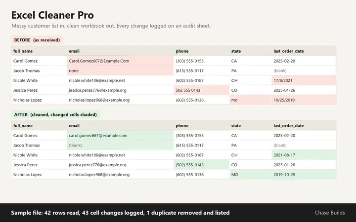
Cleans messy CSV and Excel files and logs every change on an audit sheet.
Measured5,615 of 5,627 fixable errors fixed, 611 of 611 unsafe values flagged.
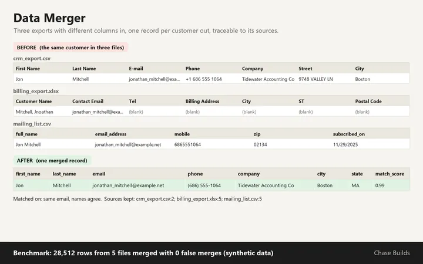
Merges customer lists with different columns into one record per customer.
Measured28,512 rows from 5 files with 0 false merges.
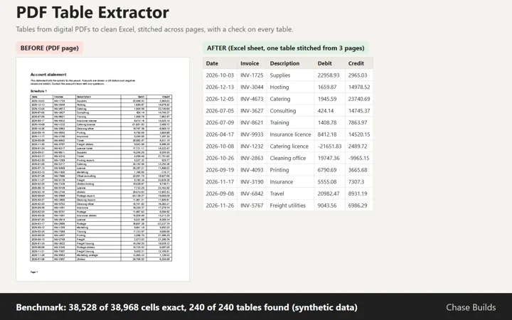
Tables from digital PDFs to clean Excel and CSV, stitched across pages, with a totals check on every table.
Measured38,528 of 38,968 cells exact, 240 of 240 tables found.

Messy US mailing addresses to standardized, split fields, with duplicates grouped.
Measured99.5% of cleaned rows fully right, 100% duplicate precision.

Declarative checks for CSV, Excel and Parquet files, run as DuckDB SQL, with a pass/fail report.
Measured1,784 of 1,800 planted faults caught, 0 false alarms in 220 clean runs.
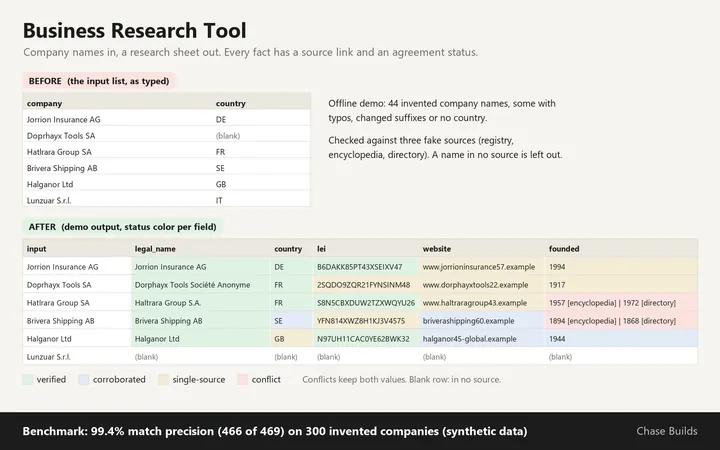
Company names to a research sheet where every fact has a source.
Measured99.4% match precision on 300 test companies.
Compare two versions of a spreadsheet, cell by cell.
Measured2,803 of 2,803 planted edits found, 0 false flags.
Match products between two lists by SKU, units and fuzzy names.
Measured2,216 of 2,216 automatic matches correct.
Load CSV and Excel into SQL with type inference and a load report.
Measured2,000 of 2,000 columns typed correctly.
Nested JSON to tidy related tables in Excel, CSV or SQLite.
Measured426,604 of 426,604 values placed exactly once.
Offline quality checks for B2B contact lists.
Measured1,531 of 1,531 planted faults caught.
Scan Excel workbooks for formula errors, hard-coded numbers and broken links.
MeasuredAll 6 planted issue types caught, 0 false flags.
Categorize bank transactions with editable rules and a monthly summary.
Measured5,100 of 5,100 seeded transactions categorized.
Combine a folder of files with aligned columns, or split a big file.
Measured100,000 of 100,000 rows out, columns aligned.
Fast, mobile-first pages and motion that work without a framework.
Web apps, dashboards and browser tools that run on a phone or laptop.
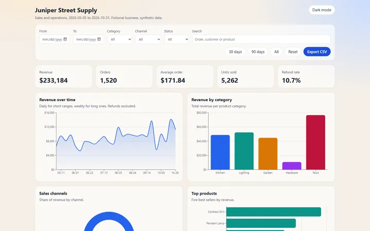
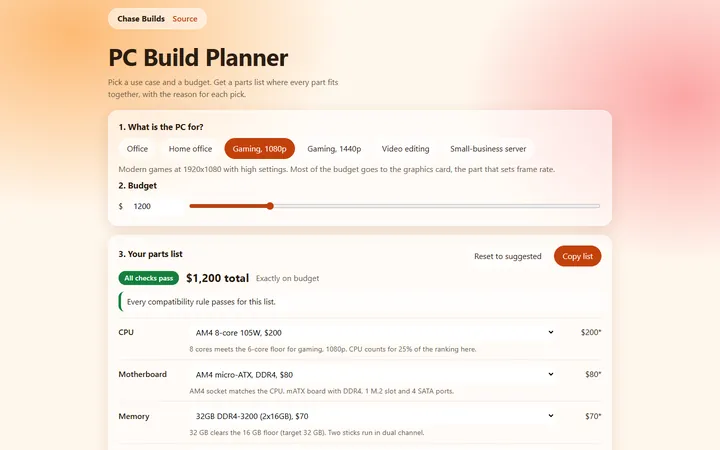
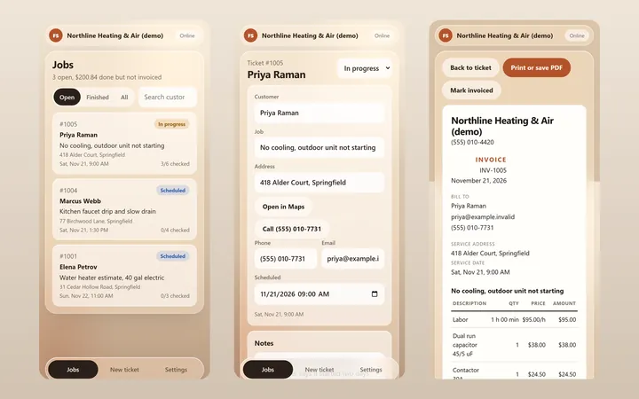
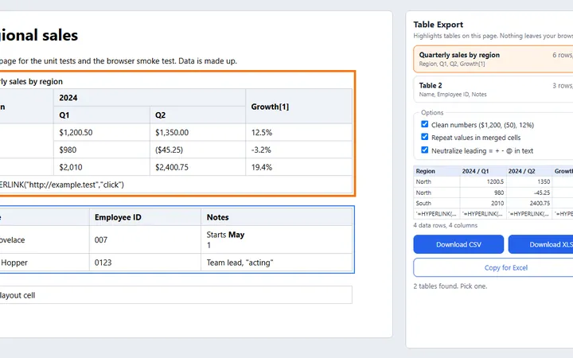
Chrome and Edge extension that exports any table on a web page to CSV or Excel. No data leaves the browser.
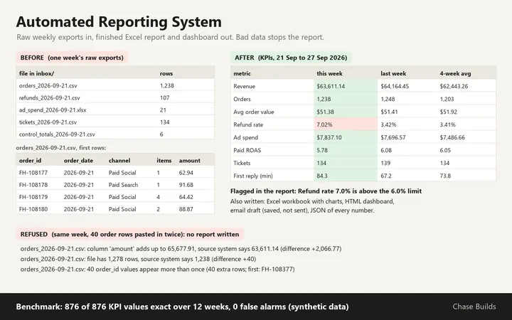
Raw weekly exports to a finished Excel report and HTML dashboard.
Measured876 of 876 KPI values exact, 17 of 18 planted faults caught.
Backends and scripts that take repeat work off your plate.
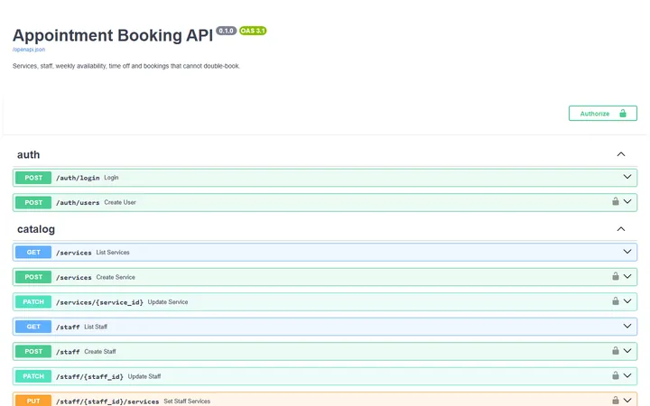
Booking backend for a small business: staff hours, time off, no double-booking, time-zone-correct slots.
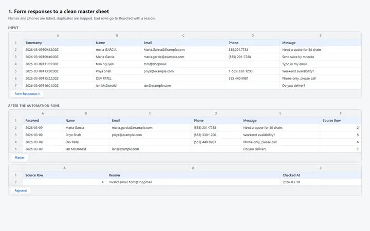
Five Google Sheets automations: form cleanup, summary emails, invoice PDFs, overdue reminders, low-stock alerts.

Public catalog pages to a checked spreadsheet, only where robots.txt allows.
Measured360 of 360 field values correct on the test site.
Plain-English checkups of a website's public setup, no hacking involved.
The same four rules apply to every data tool.
BENCHMARK.md and LIMITATIONS.md).For small businesses around Pikeville, Prestonsburg, Paintsville and Hazard. First jobs are priced low, and you only pay if you are happy with the result.
Work I take on.